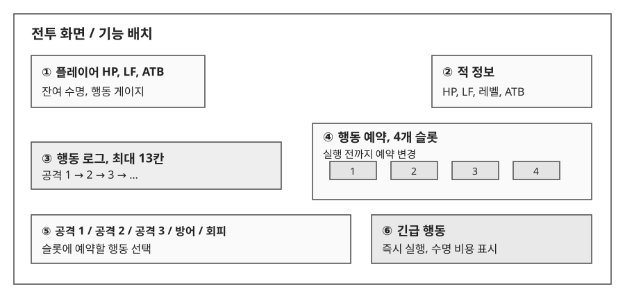

1.1 전투 흐름과 정보 배치
전투 목표
적을 빠르게 처치해 남아 있는 수명을 흡수한다. 플레이어는 공격 순서를 추리하는 동안에도 수명을 소모하므로, 충분히 관찰할지 비용을 내고 힌트를 받을지 판단해야 한다.

| 번호 | 기능 | 표시와 입력 규칙 |
|---|---|---|
| ①, ② | 전투 상태 | HP와 수명을 구분하고, 양측의 행동 게이지를 표시한다. |
| ③ | 행동 로그 | 공격 행동만 최대 13칸에 기록한다. 오래된 기록부터 밀어낸다. |
| ④ | 행동 예약 | 4개 슬롯에 행동을 예약한다. 실행 전에는 변경할 수 있다. |
| ⑤ | 기본 행동 | 공격 1, 2, 3, 방어, 회피를 제공한다. |
| ⑥ | 긴급 행동 | 소모 수명을 표시한다. 비용을 지불하고 게이지와 무관하게 실행한다. |
진행 규칙
- 탐험 중 적이 있는 타일에 1칸 이내로 인접하면 전투에 진입한다.
- 양측 ATB 게이지가 자동으로 충전되며, 충전 중 수명이 감소한다.
- 게이지가 100%가 되면 예약 행동을 실행한다. 행동은 한쪽이 끝난 뒤 다음 행동을 처리한다.
- 플레이어와 적이 한 번씩 행동한 뒤 긴급 행동을 사용할 수 있다.
- 적 HP가 0이 되면 남은 수명을 흡수한다. 플레이어의 수명이 0이 되면 런이 종료된다.
- 플레이어 HP가 0이 되면 전투에서 패배한다. 패배 시 손실 규칙은 미확정이다.